¡SaharaToursGo!
¡SaharaToursGo!
¿PORQUE VISITAR MARRAKECH?
Como otras ciudades imperiales marroquíes, Marrakech está dividida fundamentalmente en dos partes: el centro con la gran Medina o ciudad vieja, rodeada de espectaculares bastiones de tierra roja, y, fuera de las murallas, la ville nouvelle o ciudad nueva, construida por los franceses en los años del dominio colonial y en continua expansión.
De ahí su sobrenombre de "ciudad roja". La Medina de Marrakech está llena de antiguos palacios y mezquitas, que como es costumbre en Marruecos, no están abiertas a los no musulmanes. Su lugar más emblemático es la gran plaza de Jamaa el Fna.
Al oeste de los bastiones de la Medina se extiende la ville nouvelle, con los barrios de Guéliz e Hivernage; la arteria principal es la Avenue Mohammed V, una amplia avenida arbolada que desemboca junto a una de las puertas de la ciudad vieja. En dirección este, finalmente, se encuentra el barrio residencial de la Palmeraie, una zona semidesértica llena de palmeras que en los últimos años se ha llenado de edificios.
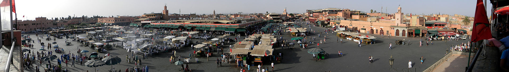ZONAS Y BARRIOS QUE DEBES VISITAR!
- LA MEDINA
- LA GUÈLIZ
- LA HIVERNAGE
- LA PALMERAIE
- LA MELLAH
Es la ciudad vieja, protegida por un cordón de bastiones hechos de tierra roja que encierran un laberinto de callejuelas y palacios, mercados y mezquitas, cúpulas y minaretes. La Medina de Marrakech ha sido declarada como Patrimonio de la Humanidad por la Unesco en el año 1985, siendo actualmente uno de los lugares de visita obligada
Su corazón es la gran plaza Jamaa el Fna, al norte de la cual se abre el laberinto de los Suks (mercados tradicionales, a menudo descubiertos). Siguiendo hacia el norte se encuentran la mezquita y madraza de Ben Youssef y el Museo de Marrakech. Al sur de la plaza, en cambio, a lo largo de los siglos se han instalado los gobernantes de la ciudad. Hoy la zona está dominada por el Palacio Real, erigido sobre las ruinas de los precedentes palacios almohades, que ocupa una vastísima área rodeada de murallas (la llamada kasbah, que significa ciudadela fortificada) y no está abierto al público.
Pero se puede visitar el palacio de la Bahía y de Dar Si Said, construidos en el siglo XIX por dos visires de los sultanes y las imponentes ruinas del gran palacio Badi.
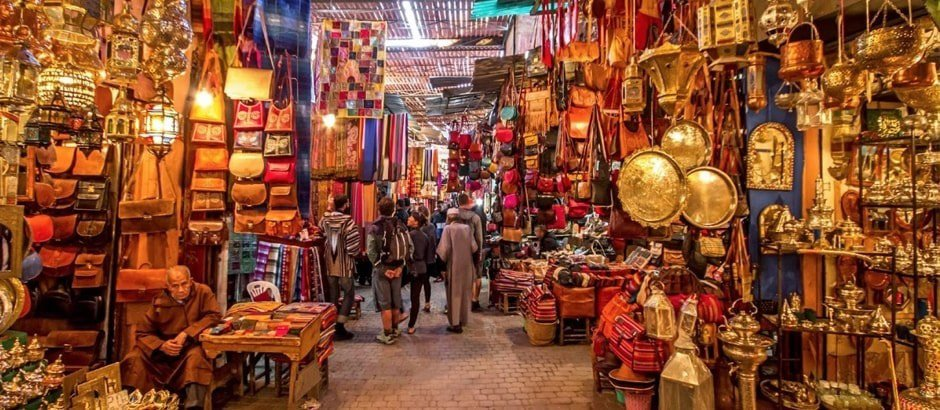Es el núcleo principal de la ciudad nueva, construido por los franceses en los años treinta. El barrio es menos característico que la Medina, pero también animado. Aquí es donde se concentran los grandes hoteles internacionales y los restaurantes, las tiendas y los no muy numerosos locales nocturnos de la ciudad
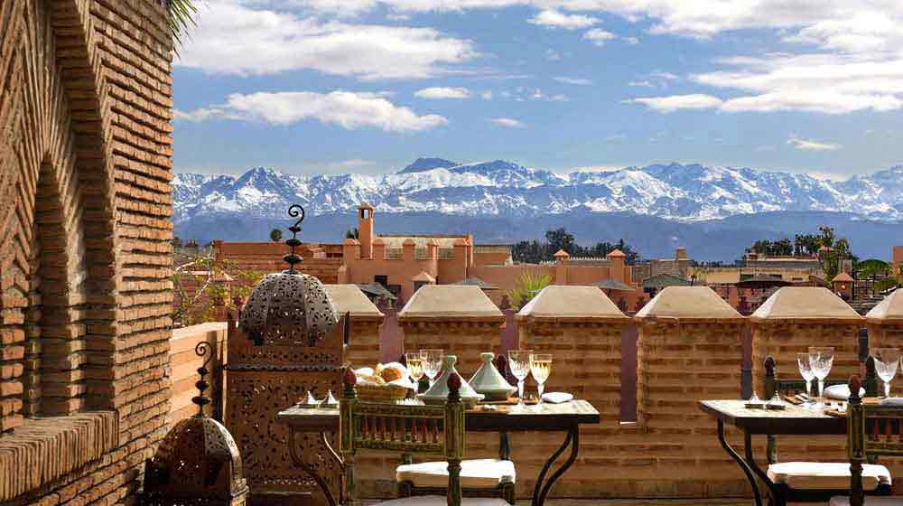Al sur de Guéliz y un poco al oeste de la Medina se encuentra este pequeño barrio residencial que alberga villas particulares y hoteles internacionales de cinco estrellas, así como el nuevo Teatro de la Ópera y el Palacio de Congresos.
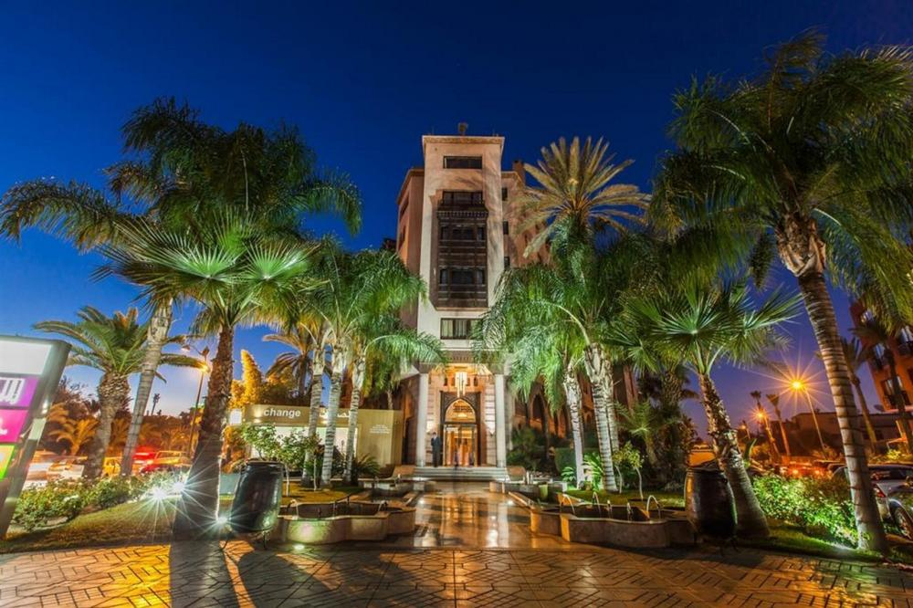Este vasto oasis de tierra pelada y palmeras se extiende al noreste de la Medina.Es la última frontera de los millonarios de Marrakech, marroquíes y extranjeros, que se han construido residencias de lujo, con jardines exuberantes y a menudo circundadas de altos muros para proteger la privacidad de los residentes y sus huéspedes.
Algunas son hoteles de lujo, como el Hotel Jnane Tamsna, una distinguida infraestructura en estilo ecléctico que hospeda a las estrellas de Hollywood que pasan por la ciudad, o Les Deux Tour, proyectado por el arquitecto más famoso de la ciudad, Charles Boccarà. Es una especie de Beverly Hills a la marroquí, donde se rige la norma del total respeto por las palmeras de modo que ninguna construcción puede dañar o interferir en el crecimiento de las palmeras.
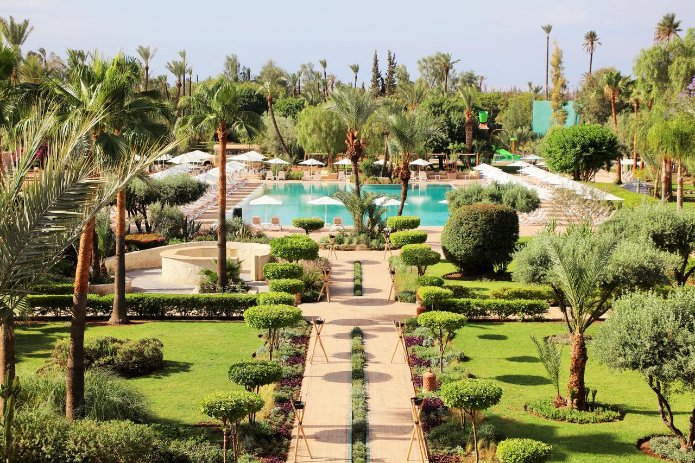Algunas son hoteles de lujo, como el Hotel Jnane Tamsna, una distinguida infraestructura en estilo ecléctico que hospeda a las estrellas de Hollywood que pasan por la ciudad, o Les Deux Tour, proyectado por el arquitecto más famoso de la ciudad, Charles Boccarà. Es una especie de Beverly Hills a la marroquí, donde se rige la norma del total respeto por las palmeras de modo que ninguna construcción puede dañar o interferir en el crecimiento de las palmeras.
Su nombre, Meliah, un apelativo común a todos los barrios judíos de las ciudades marroquíes, significa "lugar de la sal", lo cual se remonta a la época del monopolio que los mercaderes judíos tenían del comercio de la sal que se extraía de las montañas del Atlas y que se utilizaba para conservar los alimentos. La comunidad judía de Marrakech tiene un origen muy antiguo.
A principios del siglo XX contaba con unos 40.000 miembros, pero después de la Segunda Guerra Mundial, durante la cual el rey Mohammed V rechazó aplicar las leyes antisemitas promulgadas por el gobierno francés colaboracionista de Vichy, la mayoría emigró a Francia, Estados Unidos o Israel o se trasladó a Casablanca. Actualmente quedan sólo algunos centenares de personas.
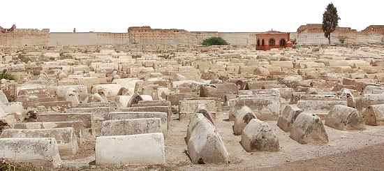LOS MUSEOS EN MARRAKECH
Marrakech no es una ciudad de grandes museos y espacios de exposición tradicionales, pero cuenta con interesantes colecciones, públicas y privadas, de arte y artesanía marroquí antigua y contemporánea
En el centro de atención, dada la historia y la situación geográfica de la ciudad a las puertas del Atlas, está sobre todo la cultura bereber. Todo ello expuesto en un marco que a menudo es por sí mismo el protagonista: antiguos palacios de encanto oriental, con refinado mobiliario y decoración.
También es posible encontrar lugares donde se concentra la vida cultural y mundana de Marrakech de hoy: sofisticadas galerías de arte que a menudo funcionan como espacios multifuncionales, acogen exposiciones temporales de pintura, fotografía, tiendas, librerías y cafés.
- DAR CHERIFA
- MINISTERIO DEL GUSTO
- MUSÈE DAR SI SAID
- MUSÈE DE MARRAKECH
- MUSÈE DU JARDIN MAJORELLE
- MUSÈE TIZKIWIN
Galería-café literario convertida en uno de los puntos centrales de la escena artística de la ciudad. Se encuentra en uno de los riads más antiguos de Marrakech, pues data de fines del siglo XVI.
En ambientes devueltos a su antiguo esplendor y decorados con un gusto impecable, se pueden ver exposiciones de arte contemporáneo o fotografía, asistir a conciertos de música tradicional (gnawa, sufí, etc.) o a presentaciones de libros, o simplemente charlar frente a un vaso humeante de té a la menta, la bebida nacional de Marruecos.
La idea es de Abdellatif Aït Ben Abdallah, el propietario de Marrakech Riads, una sociedad encargada de la venta y restauración de los riads y que ha restaurado, con gran rigor filológico, el palacio que alberga el centro cultural y otros cinco edificios dispersos por la Medina, transformándolos en maison d'hôtes.
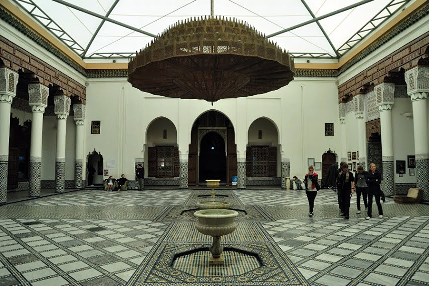Ideado y realizado por los diseñadores italianos Alessandra Lippini y Fabrizio Bizzarri, este excéntrico gran espacio multifuncional se utiliza también como espacio para muestras temporales, cambiando de muestra cada tres meses aproximadamente, dedicadas tanto a artistas marroquíes como internacionales.
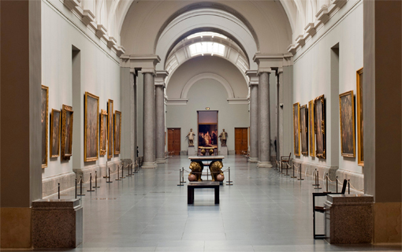Situado en un suntuoso palacio del siglo XIX, expone una rica colección de objetos de arte y artesanía tradicional del sur de Marrruecos, entre los cuales hay piezas de cobre, alfombras, ropas y joyas bereberes, piezas talladas de madera de cedro, puertas, persianas policromas y fragmentos de techos, además de un "minbar", una especie de púlpito transportable, que había sido utilizado en la mezquita Kutubía. El museo fue construido en el siglo XII por artesanos de Córdoba y sus lados están adornados por unos mil paneles decorados.
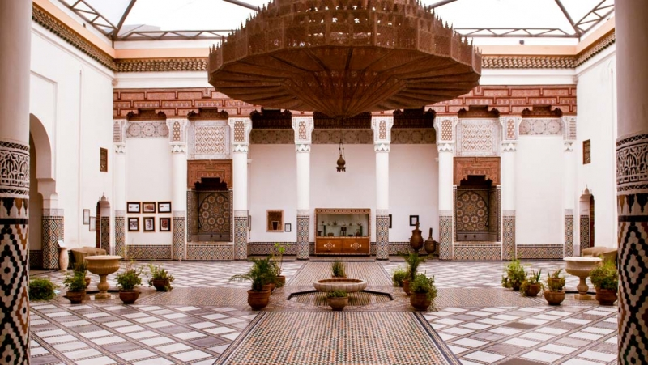Inaugurado a fines de los años noventa en un palacio del siglo XIX meticulosamente restaurado, el museo se creó con el fin de tener una colección permanente de arte marroquí contemporáneo y organizar exposiciones y otros eventos culturales. Acoge también una preciosa colección de libros y caligrafía islámica y una recopilación de litografías y acuarelas de temas marroquíes
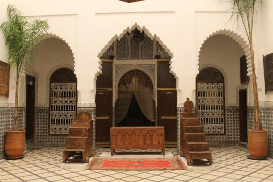La villa Majorelle, que hizo construir en los años veinte el pintor Jacques Majorelle y que compró en los años sesenta el famoso estilista francés Yves Saint Laurent, alberga una colección permanente de arte islámico, que hoy se puede visitar junto con el espléndido jardín. Hay joyas tradicionales, bordados, manuscritos miniados, antiguas piezas de madera tallada y una serie de litografías de Majorelle dedicadas al Atlas.
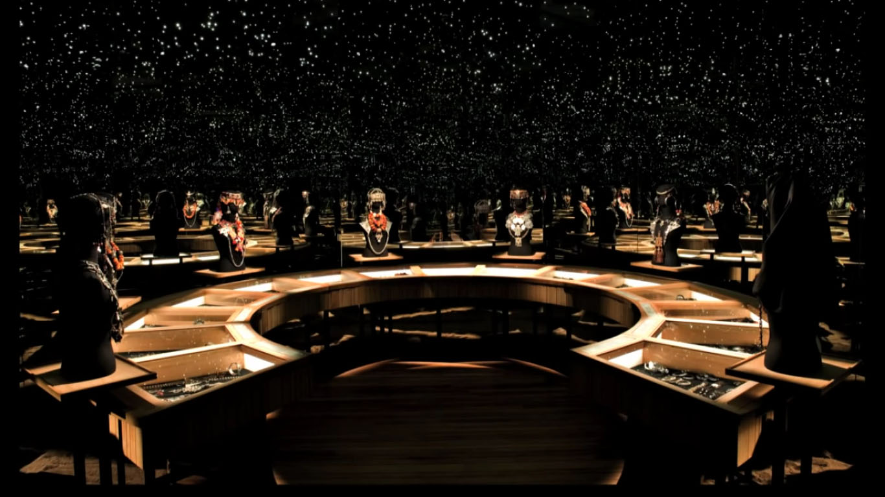Este pequeño museo privado, que se halla en el palacio del antropólogo-coleccionista holandés Bert Flint, cuenta con una magnífica colección de cerámicas, alfombras, tejidos y ropas bereberes.
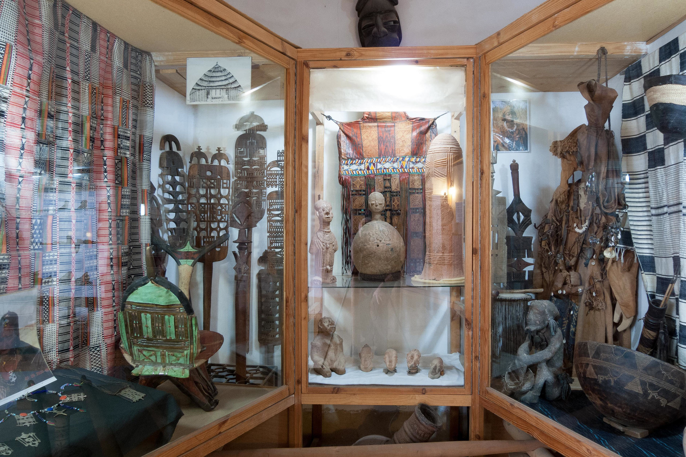